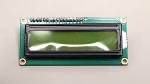
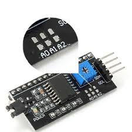
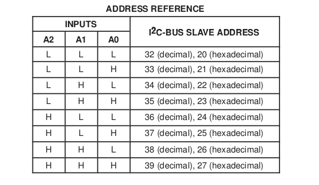
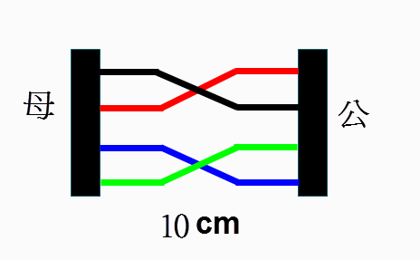
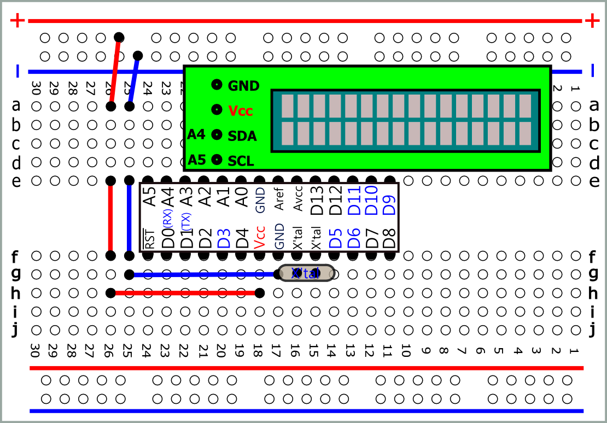
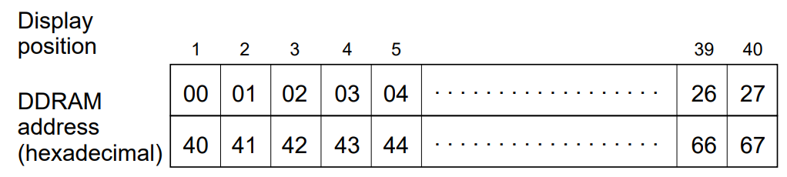
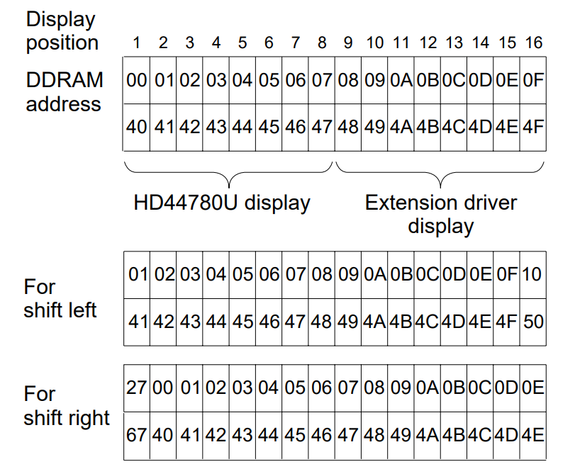
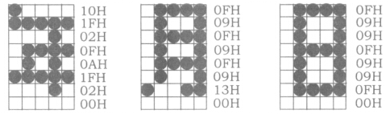
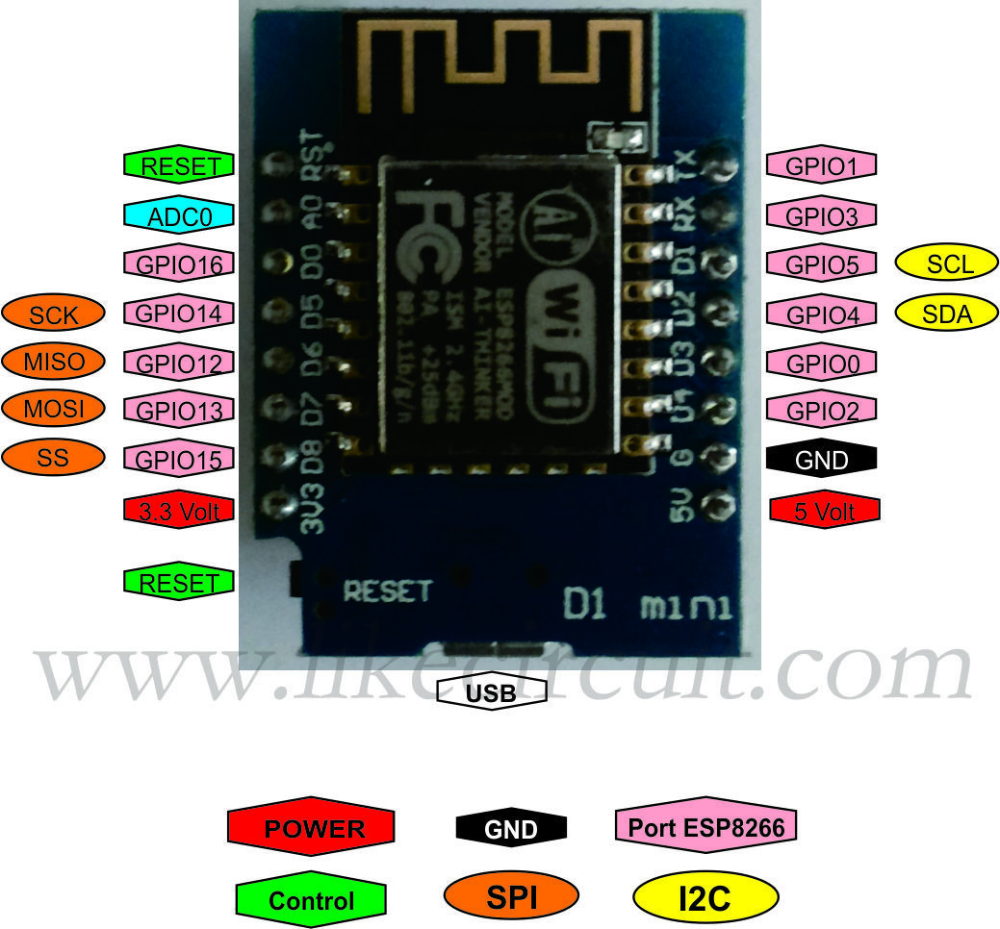

| LCD (I2C) |
| Library: LiquidCrystal_I2C.zip |
| I2C :Inter Integrated Circuit LCD: Liquid Crystal Display HD44780U.pdf(pdf) Character Codes A00(pdf) Character Codes A02(pdf) |
|
   short : L open: H default address:0x27 (不同公司產品Address可能不同)
|
SDA-->A4 SCL-->A5  |
 svg |
|
//1. //先以此程式確定 Address //Address Scanner #include <Wire.h> void setup() Serial.begin(9600); void loop() Serial.println("Scanning..."); nDevices = 0; if (error == 0) nDevices++; delay(5000); // wait 5 seconds for next scan |
|
//2.a //0x3F #include <LiquidCrystal_I2C.h> |
//2.b //0x3F #include <LiquidCrystal_I2C.h> LiquidCrystal_I2C lcd(0x3F,16,2); void setup() { lcd.init(); lcd.noBacklight();//(預設) } void loop() { } |
| //3.a #include <LiquidCrystal_I2C.h> LiquidCrystal_I2C lcd(0x3F,16,2); void setup() { lcd.init(); lcd.backlight(); lcd.cursor(); lcd.setCursor(0,0); lcd.print("0123456789"); } void loop() { } |
//3.b #include <LiquidCrystal_I2C.h> LiquidCrystal_I2C lcd(0x3F,16,2); void setup() { lcd.init(); lcd.backlight(); lcd.noCursor();//預設 lcd.setCursor(0,0); lcd.print("0123456789"); } void loop() { } |
|
//4.a //0x3F #include <LiquidCrystal_I2C.h> } |
//4.b //0x3F
} |
| //5.a #include <LiquidCrystal_I2C.h> LiquidCrystal_I2C lcd(0x3F,16,2); void setup() { lcd.init(); lcd.backlight(); lcd.setCursor(0,0); lcd.print("0123"); lcd.setCursor(0,0); lcd.print("AB"); } void loop() { } |
//5.b #include <LiquidCrystal_I2C.h> LiquidCrystal_I2C lcd(0x3F,16,2); void setup() { lcd.init(); lcd.backlight(); lcd.setCursor(0,0); lcd.print("0123"); lcd.clear(); lcd.setCursor(0,0); lcd.print("AB"); } void loop() { } |
| //6 #include <LiquidCrystal_I2C.h> LiquidCrystal_I2C lcd(0x3F,16,2); void setup() { lcd.init(); lcd.backlight(); lcd.setCursor(0,0); lcd.print("Hello, world!"); lcd.setCursor(0,1); lcd.print("JAMES"); lcd.blink(); } void loop() { lcd.display();//顯示 delay(1000); lcd.noDisplay();//不顯示 delay(1000); } |
| //7 #include <LiquidCrystal_I2C.h> LiquidCrystal_I2C lcd(0x3F,16,2); void setup() { lcd.init(); lcd.backlight(); lcd.setCursor(0,0); //lcd.leftToRight(); //預設 lcd.print("0123456789"); lcd.setCursor(15,1); lcd.rightToLeft(); lcd.print("0123456789"); } void loop() { } |
  |
| //8 #include <LiquidCrystal_I2C.h> LiquidCrystal_I2C lcd(0x3F,16,2); void setup() { lcd.init(); lcd.backlight(); lcd.blink(); lcd.setCursor(0,0); lcd.print("0123456789ABCDEF01"); lcd.setCursor(0,1); lcd.print("0123456789ABCDEF01"); } void loop() {} |
| //9 #include <LiquidCrystal_I2C.h> LiquidCrystal_I2C lcd(0x3F,16,2); void setup() { lcd.init(); lcd.backlight(); lcd.blink(); lcd.setCursor(0,0); lcd.print("0123456789ABCDEF01"); lcd.setCursor(0,1); lcd.print("0123456789ABCDEF01"); lcd.scrollDisplayLeft();//記憶體往左移1位 } void loop() {} |
| //10 #include <LiquidCrystal_I2C.h> LiquidCrystal_I2C lcd(0x3F,16,2); void setup() { lcd.init(); lcd.backlight(); lcd.blink(); lcd.setCursor(0,0); lcd.print("0123456789ABCDEF01"); lcd.setCursor(0,1); lcd.print("0123456789ABCDEF01"); } void loop() { lcd.scrollDisplayLeft();//記憶體往左移1位 delay(1000); lcd.scrollDisplayRight();//記憶體往右移1位 delay(1000); } |
| //11 #include <LiquidCrystal_I2C.h> LiquidCrystal_I2C lcd(0x3F,16,2); void setup() { lcd.init(); lcd.backlight(); lcd.setCursor(0,0); lcd.print("0123456789"); lcd.setCursor(39,0); lcd.print("A"); delay(1000); lcd.scrollDisplayRight();//記憶體往右移1位 delay(1000); } void loop() { } |
| //12 #include <LiquidCrystal_I2C.h> LiquidCrystal_I2C lcd(0x3F,16,2); void setup() { lcd.init(); lcd.backlight(); lcd.setCursor(0,0); lcd.print("0123456789"); lcd.scrollDisplayRight(); lcd.scrollDisplayRight(); delay(3000); lcd.blink(); lcd.home(); } void loop() { } |
| //13 #include <LiquidCrystal_I2C.h> LiquidCrystal_I2C lcd(0x3F,16,2); void setup() { lcd.init(); lcd.backlight(); lcd.blink(); lcd.setCursor(15,0); lcd.autoscroll(); //記憶體自動左捲 lcd.print("0"); } void loop() { |
| //14 #include <LiquidCrystal_I2C.h> LiquidCrystal_I2C lcd(0x3F,16,2); void setup() { lcd.init(); lcd.backlight(); lcd.blink(); lcd.noAutoscroll();//記憶體不自動左捲(預設) lcd.setCursor(0,0); lcd.print("0123456789"); delay(3000); lcd.setCursor(15,1); lcd.autoscroll(); //記憶體自動左捲 lcd.print("0"); } void loop() { } |
| //15 #include <LiquidCrystal_I2C.h> LiquidCrystal_I2C lcd(0x3F,16,2); void setup() { lcd.init(); lcd.backlight(); lcd.setCursor(0,0); lcd.print("0123456789"); delay(3000); lcd.setCursor(16,1); lcd.autoscroll(); lcd.print("0"); delay(1000); lcd.print("1"); delay(3000); lcd.noAutoscroll(); lcd.setCursor(2,1); lcd.print("2"); delay(1000); lcd.print("3"); } void loop() { } |
| //16 #include <LiquidCrystal_I2C.h> LiquidCrystal_I2C lcd(0x3F,16,2); void setup() { lcd.init(); lcd.backlight(); lcd.setCursor(40,0);//等於(0,1) lcd.print("AB"); } void loop() { } |
| //17 #include <LiquidCrystal_I2C.h> LiquidCrystal_I2C lcd(0x3F,16,2); void setup() { lcd.init(); lcd.backlight(); lcd.setCursor(80,0);//並不等於(0,0) lcd.print("AB"); } void loop() { } |
| // 陣列 #include <LiquidCrystal_I2C.h> LiquidCrystal_I2C lcd(0x3F,16,2); char* myNotes[ ]={"Do ", "Re ", "Mi ","Fa ", "So "}; void setup() { lcd.init(); lcd.backlight(); lcd.setCursor(0,0); for(int i=0;i<5;i++){ lcd.print(myNotes[i]); delay(1000); } } void loop() { } |
| //Serial Monitor -->LCD #include <LiquidCrystal_I2C.h> LiquidCrystal_I2C lcd(0x3F,16,2); void setup() { Serial.begin(9600); lcd.init(); lcd.backlight(); lcd.cursor(); lcd.setCursor(0,0); } void loop() { if (Serial.available()) { // 等待一小段時間，確認資料都接收下來了 delay(100); // 清除舊訊息 lcd.clear(); // 讀取新訊息 while (Serial.available() > 0) { // 將訊息顯示在 LCD 上 lcd.write(Serial.read()); } } } |
| //AnalogRead -->LCD #include <LiquidCrystal_I2C.h> LiquidCrystal_I2C lcd(0x3F,16,2); int val; void setup() { Serial.begin(9600); lcd.init(); lcd.backlight(); lcd.cursor(); lcd.setCursor(0,0); } void loop() { val=analogRead(A1); lcd.clear(); lcd.print(val); delay(100); } |
| 自訂自型(只能訂8個) |
|
//18 /* createChar()Create a custom character (gylph) for use on the LCD. Up to eight characters of 5x8 pixels are supported (numbered 0 to 7).*/ 
LiquidCrystal_I2C lcd(0x3F,16,2); void setup() } void loop()
|
|
//19
LiquidCrystal_I2C lcd(0x3F,16,2); byte heart[8] = {0x0,0xa,0x1f,0x1f,0xe,0x4,0x0,0x0};
} void loop() |
|
//20
byte bell[8] = {0x4,0xe,0xe,0xe,0x1f,0x0,0x4}; LiquidCrystal_I2C lcd(0x3F,16,2); void setup() lcd.createChar(0, bell); |
| //21 // A 0x41 65 #include <LiquidCrystal_I2C.h> LiquidCrystal_I2C lcd(0x3F,16,2); void setup() { lcd.init(); lcd.backlight(); lcd.write(65); //lcd.write(0x41); //lcd.print("A"); } void loop() { } |
| //22 // 打開Serial monitor 選擇沒有行結尾 傳送 A // A 0x41 65 #include <LiquidCrystal_I2C.h> LiquidCrystal_I2C lcd(0x3F,16,2); void setup() { lcd.init(); lcd.backlight(); Serial.begin(9600); } void loop() { if (Serial.available()) { lcd.write(Serial.read()); //A // lcd.print(Serial.read()); //65 //lcd.print(Serial.read(),HEX); //41 } } |
 |